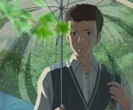

>言叶之庭<
剧情简介
年方15岁的高中生秋月孝雄，专心学业的过程中不得不为了生计打工赚钱。
母亲离家出走，他与哥哥过着看不到前方的生活。入梅之日，孝雄逃课来到日本庭园。
在一座安静的小亭子里，27岁的职场女性雪野百香里边吃巧克力边饮啤酒的样子引起了孝雄的注意。
似曾相识的二人，仿佛约定好了一般，每到落雨之日便从世俗的烦恼中逃脱出来，相会于这座钢筋铁骨都市丛林中宛若世外桃源的幽静角落。
在梅雨季节的日子里，他们的心渐渐向彼此靠拢。志愿成为手工鞋匠的秋月，决心以雪野为模特做一双鞋。
雨过天晴，艳阳高照，庭园中久久不见秋月和雪野的身影，相会无期亦有期……
角色介绍

秋月孝雄（あきづき たかお）
配音：入野自由
雪野百香里（ゆきの ゆかり）
配音：花泽香菜
职员表
- 监督・脚本・原作・分镜・演出・撮影监督・色彩设计・编集：新海诚
- 制片人：川口典孝
- 作画监督・角色设计：土屋坚一
- 美术监督：泷口比吕志
- 音乐：KASHIWA Daisuke（柏大辅）
- 制作人：伊藤耕一郎、酒井雄一
- 色彩译计：三木阳子、新海诚
- 音响导演：山田阳
- 脚本协力：松田沙也
- 制作：COMICS WAVE FILM
- 发行：东宝映像事业部
片段欣赏
幕后花絮
- 2013年4月25日《言叶之庭》漫画版在《月刊Afternoon》6月号（讲谈社）上连载，担任漫画绘制的是漫画家本桥翠 。
- 《言叶之庭》小说版在MEDIA FACTORY公司的月刊杂志《达芬奇》8月号上连载，而执笔人还是新海诚 。新海诚除了画动画，还喜欢把自己的动画故事重新写成小说 。
- 电影中植入了一些广告商信息，运动服装品牌FILA、服装品牌TRANS CONTINENTS和女鞋品牌DIANA。其中鞋子是《言叶之庭》的关键道具之一。
- 《言叶之庭》是新海诚的第六部动画作品，而细雨、骤雨、太阳雨、暴雨作为本片的重要组成部分占去了全片80%的篇幅 。
- 与《言叶之庭》同步上映的是另一部新海诚导演的短篇动画《谁人的目光》。
电影观看通道